PIDA - Playful Interface for Digital Archives
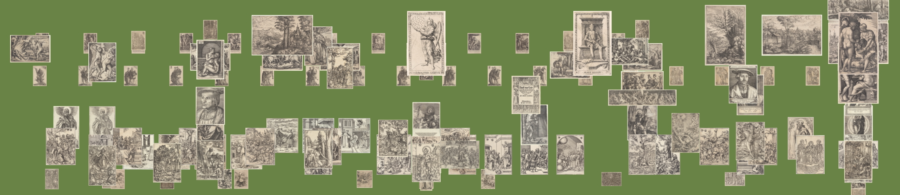
So, it's June of 2025, and my 4-year bachelor's program in Intelligent Systems in Humanities (aka Digital Humanities) program at ITMO University has come to an end.
And in order to "drop the mic" for good, I had to write and defend my thesis (spoiler alert: luckily and hardworkingly defended and graduated with excellence).
In order to keep the nature of my work practical, I've decided to devote it to developing a web-based visualization instrument.
The topic was largely influenced by the
Codex Atlanticus
project created by The Visual Agency for the Biblioteca Ambrosiana in Milan.
However, the main objective of my endeavour was to make the tool universally applicable to any custom digital collection.
Other sources of inspiration worth mentioning are:I started with hand-drawn sketches of the interface to determine the overall look and the usage scenario (yeah, cringe but it's the genuine workflow, baby).
WCMA Collection Explorer Deutsche Digitale Bibliothek Visualised by Urban Complexity Lab Coins by Urban Complexity Lab Rembrandt : Zelfportrets by John Outwater for The Metropolitan Museum
| Uploading files | Choosing parameters | Item card |
| 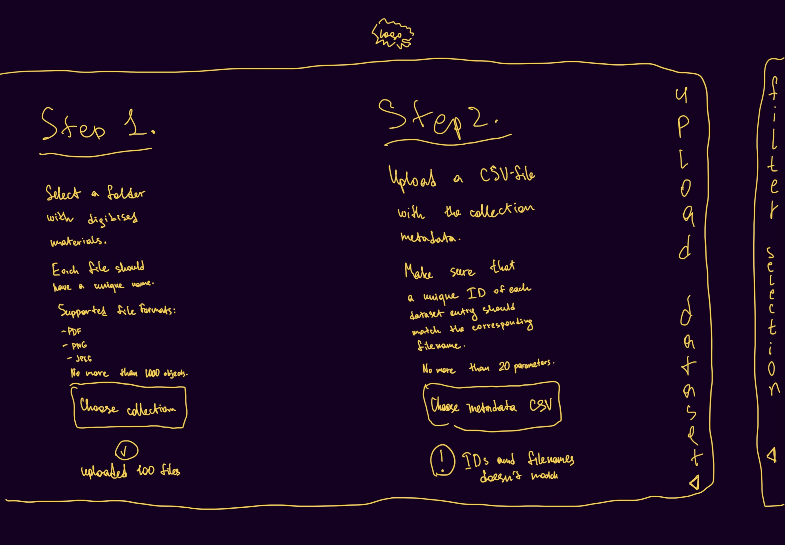 | 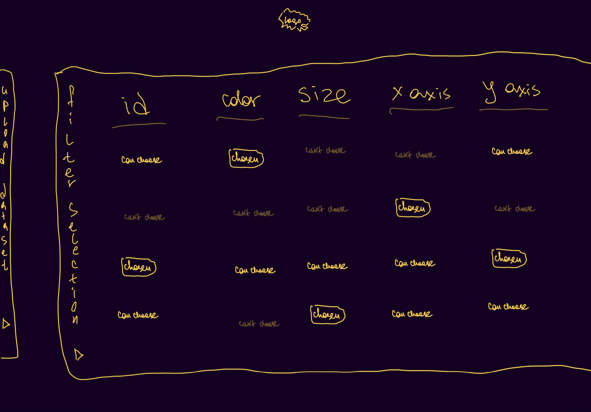 | 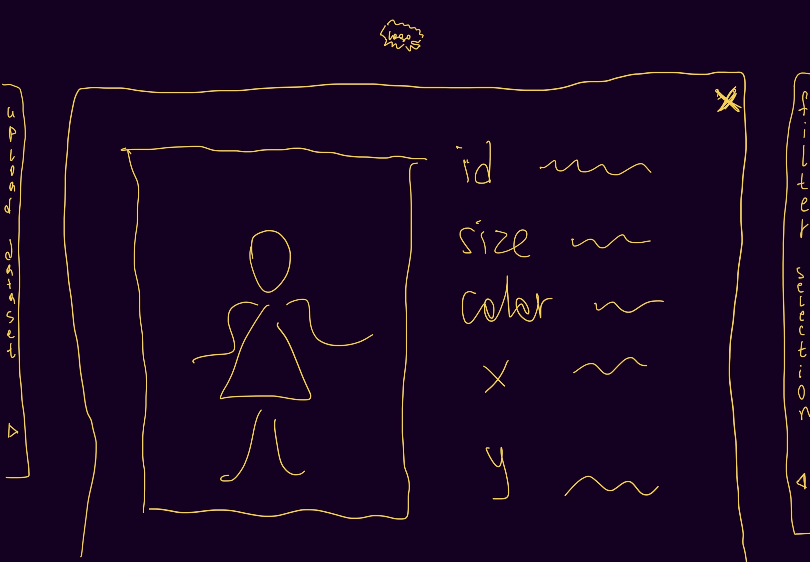 |
| Two axes | One axis | No axes |
| 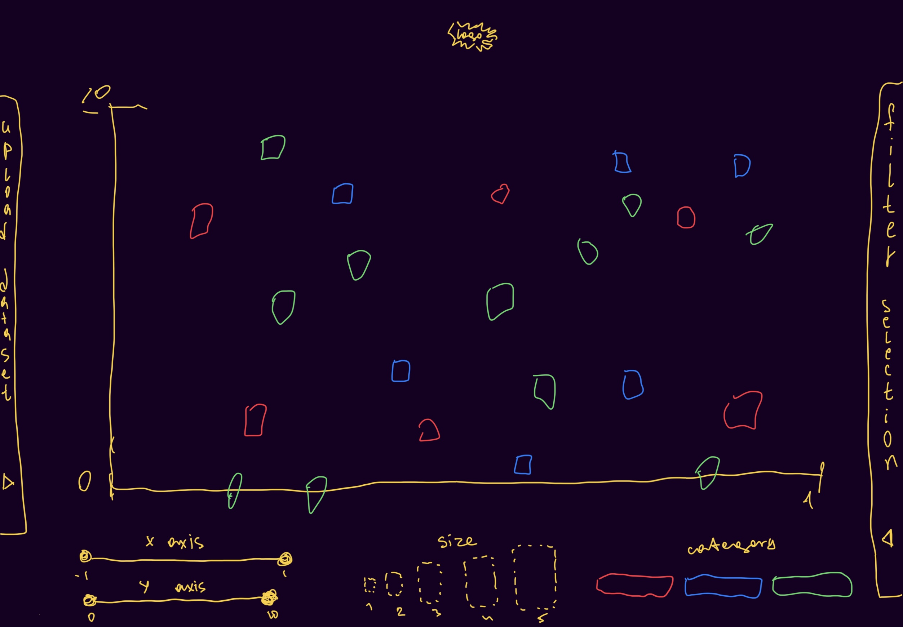 | 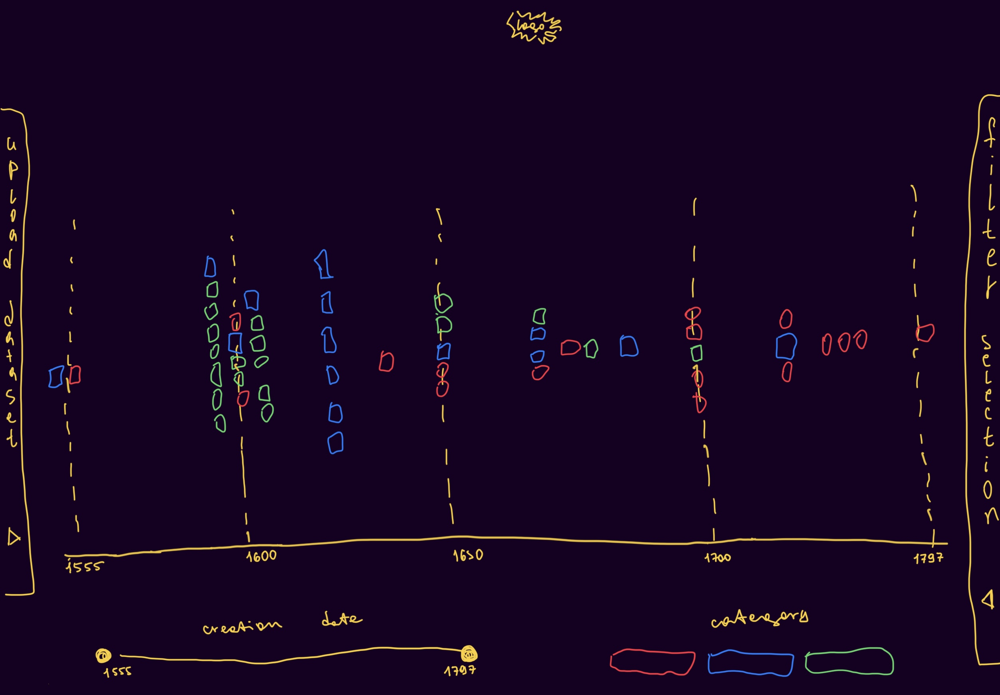 | 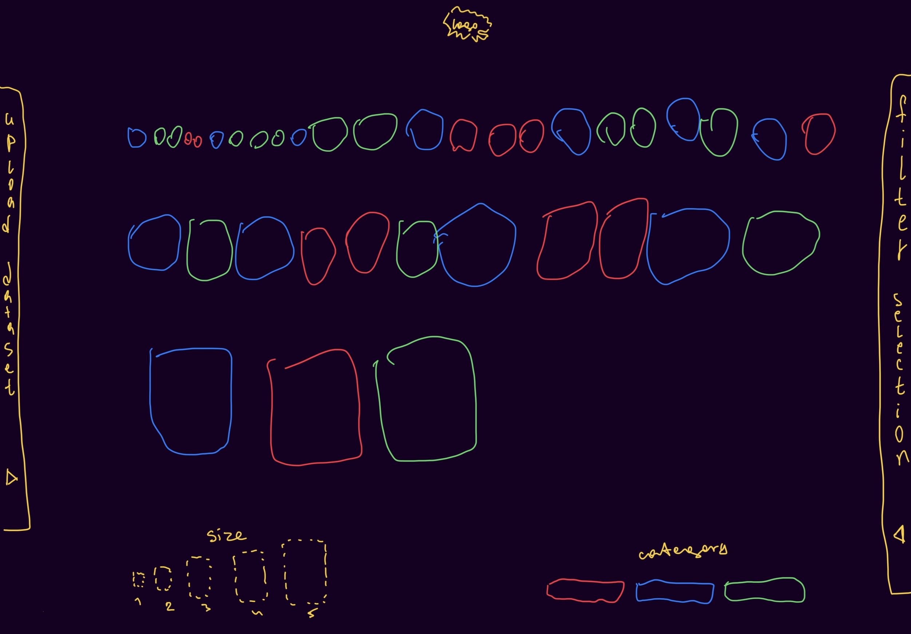 |
Here is a list of main features of the instrument:
- User uploads a collection of images and/or PDF files + a CSV file with metadata about each file through the local file reader.
- For each parameter in the CSV file it is automatically evaluated which visualisation methods are applicable to it. Then the user chooses which ones and how they want to display on the chart.
- The chart is constructed along with filters, item cards (displayed on click) and groupings of overlay items.
Finally, I scraped test datasets from:
Then I performed a simulation of how potential users might use the tool with this data.
| Kyoto Costume Institute | Museum of Medicine and Health | German old master prints from NYPL |
| 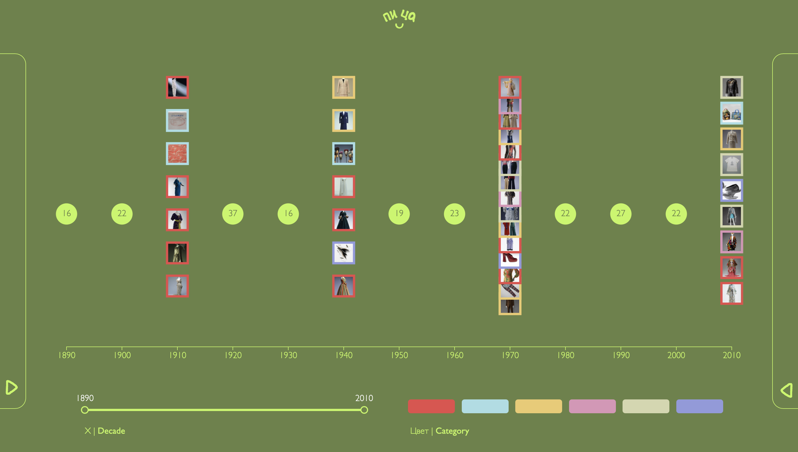 | 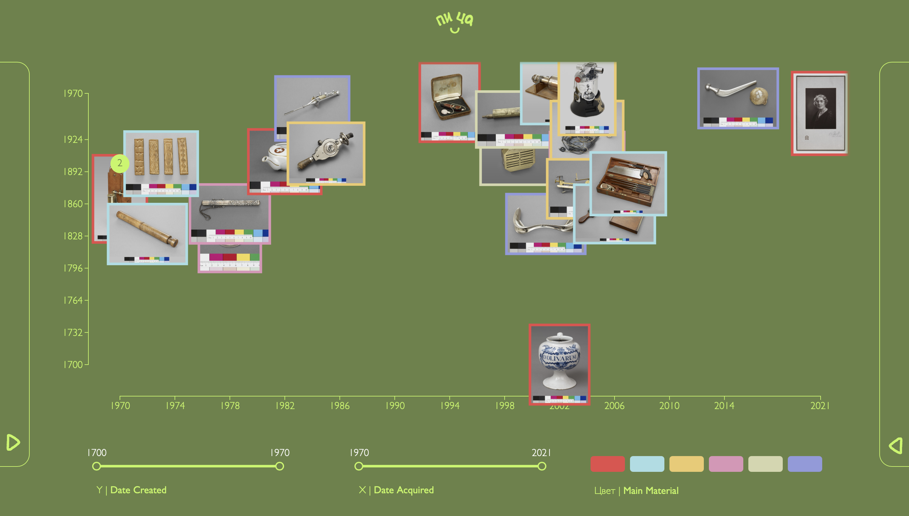 | 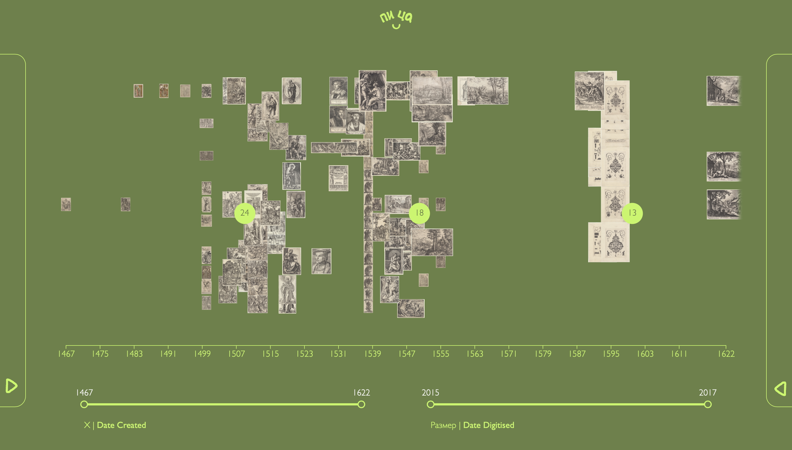 |
| 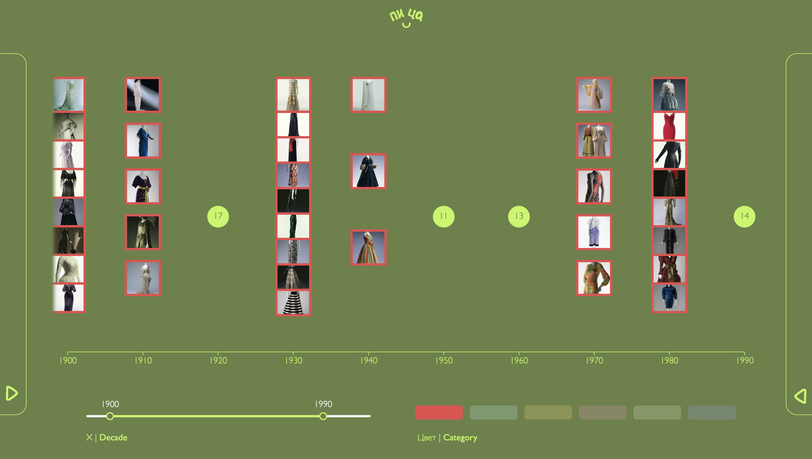 | 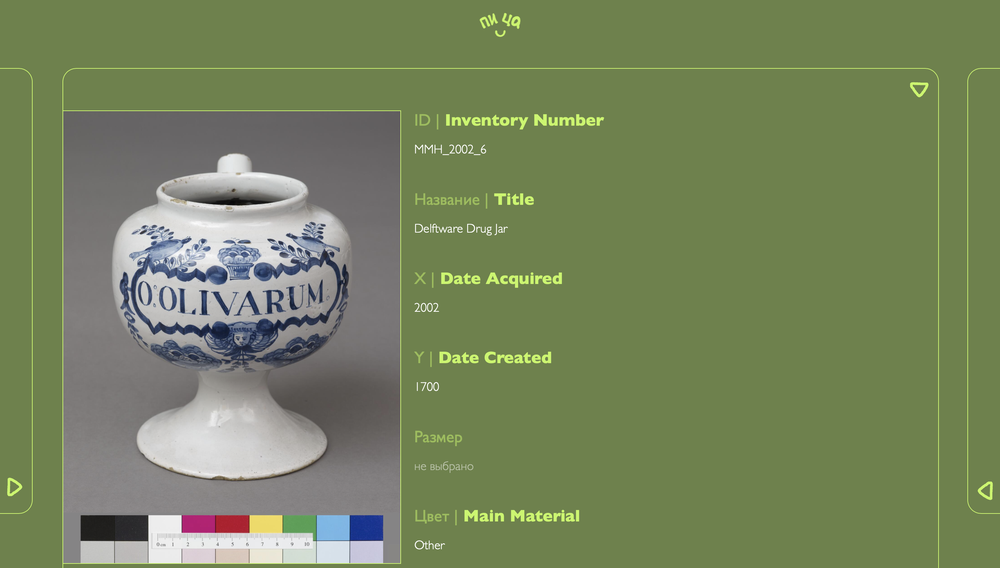 | 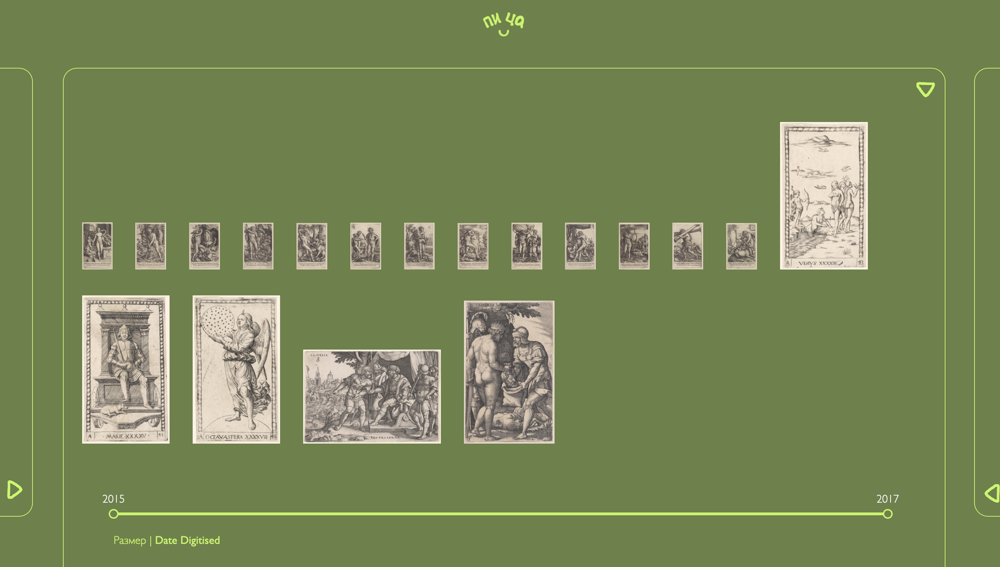 |
| 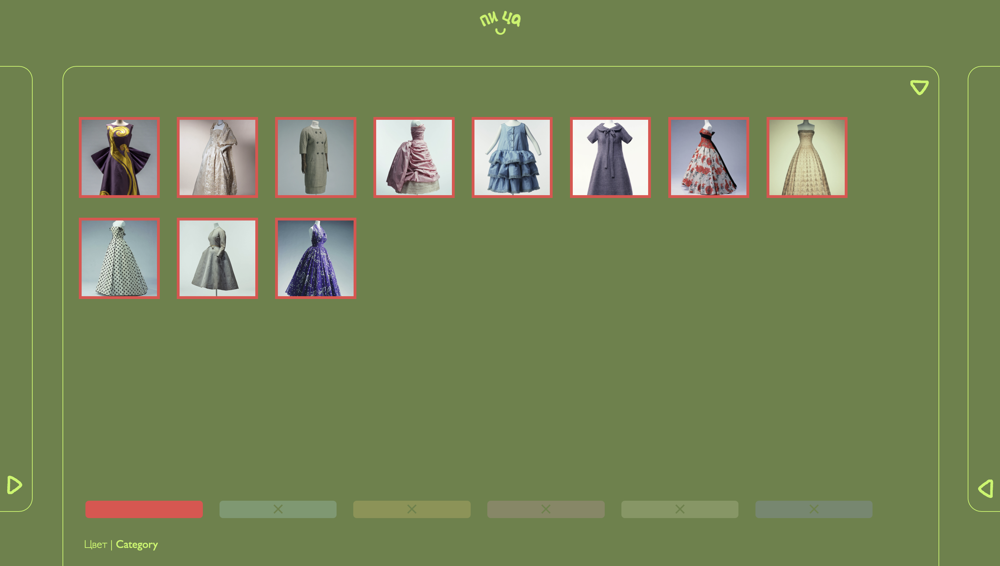 | 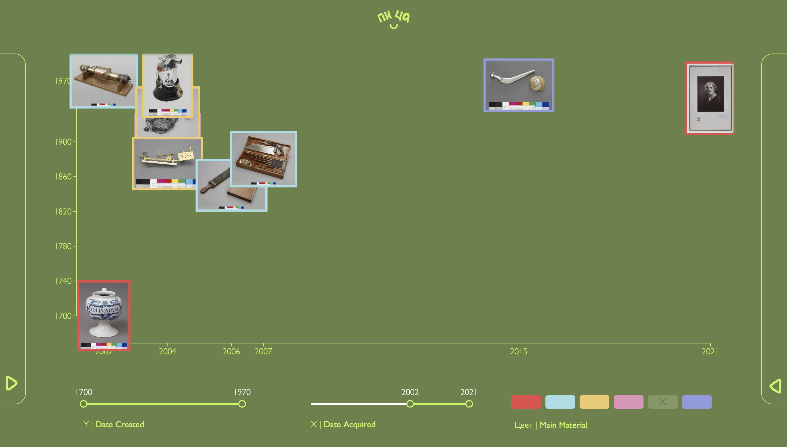 | 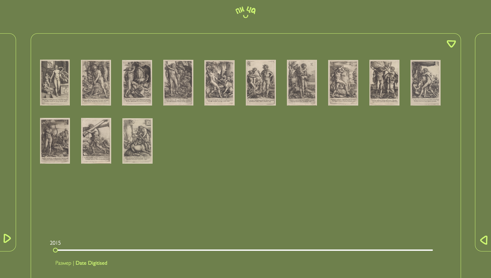 |
The most important link #2: code repository
The most important link #3: full text of the thesis
It contains an in-depth description of the development process and the research behind it, but was written in Russian. So promising to work on the translation soon.